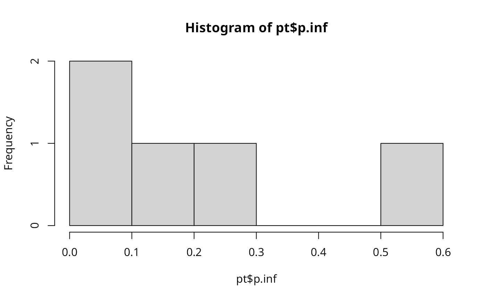

A Markov Random Walk takes an inital distribution \(p_0\) and calculates the stationary distribution of that. The diffusion process is regulated by a restart probability \(r\) which controls how often the MRW jumps back to the initial values.
The source code was brought from diffusr v0.2.1.
Usage
random_walk(
p0,
graph,
r = 0.5,
niter = 10000,
thresh = 1e-04,
do.analytical = FALSE,
correct.for.hubs = FALSE,
allow.ergodic = FALSE,
return.pt.only = FALSE
)Arguments
- p0
an \(n \times p\)-dimensional numeric non-negative vector/matrix representing the starting distribution of the Markov chain (does not need to sum to one).
- graph
an \(n \times p\)-dimensional numeric non-negative adjacence
matrix(ordgCMatrix) representing the graph- r
a scalar between \((0, 1)\). restart probability if a Markov random walk with restart is desired
- niter
maximal number of iterations for computation of the Markov chain. If
threshis not reached, thenniteris used as stop criterion.- thresh
threshold for breaking the iterative computation of the stationary distribution. If the absolute difference of the distribution at time point \(t-1\) and \(t\) is less than
thresh, then the algorithm stops. Ifthreshis not reached beforeniter, then the algorithm stops as well.- do.analytical
boolean if the stationary distribution shall be computed solving the analytical solution or rather iteratively
- correct.for.hubs
if
TRUEmultiplies a correction factor to the nodes, such that the random walk gets not biased to nodes with high degree. In that case the original input matrix will be normalized as: $$ P(j | i) = \dfrac{1}{\text{degree}(i)} \times \min \left(1, \dfrac{\text{degree}(i)}{\text{degree}(j)}\right)$$ Note that this will not consider edge weights.- allow.ergodic
Allow multiple components in a graph.
- return.pt.only
Return pt only.
Value
returns a list with the following elements
p.infthe stationary distribution as numeric vectortransition.matrixthe column normalized transition matrix used for the random walk
References
Tong, H., Faloutsos, C., & Pan, J. Y. (2006), Fast random walk with restart and its applications.
Koehler, S., Bauer, S., Horn, D., & Robinson, P. N. (2008), Walking the interactome for prioritization of candidate disease genes. The American Journal of Human Genetics
Examples
# count of nodes
n <- 5
# starting distribution (has to sum to one)
p0 <- as.vector(rmultinom(1, 1, prob = rep(.2, n)))
# adjacency matrix (either normalized or not)
graph <- matrix(abs(rnorm(n * n)), n, n)
# computation of stationary distribution
pt <- random_walk(p0, graph)
#> normalizing column vectors!
# draw histogram of the `pt` vector
hist(pt$p.inf)
